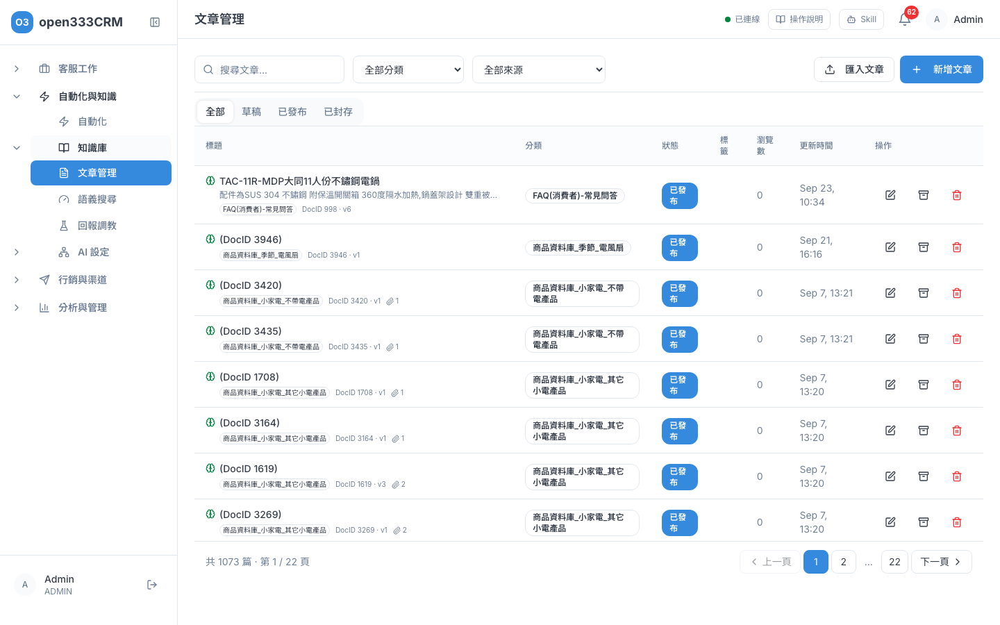
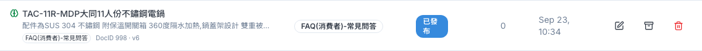
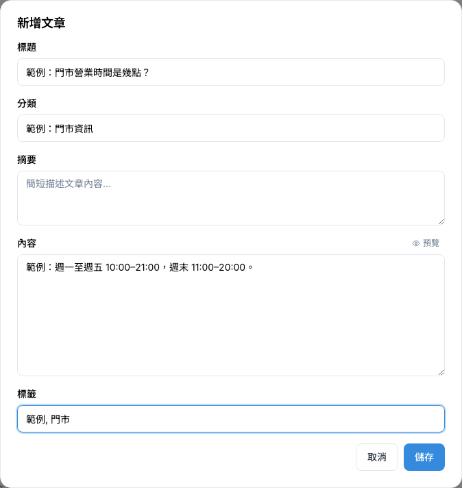
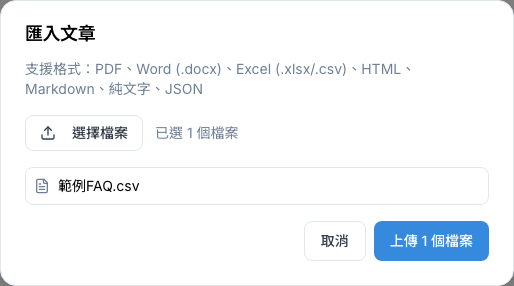
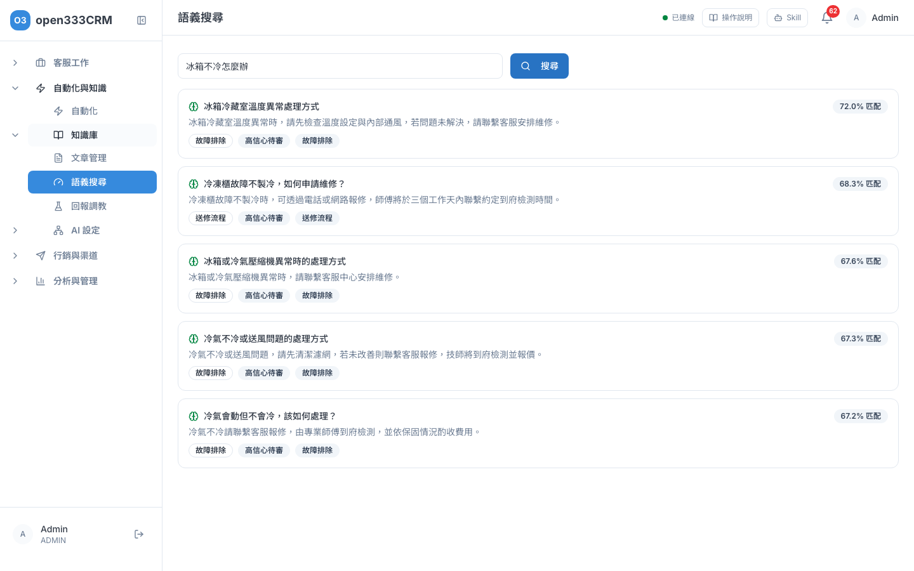
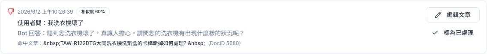

知識庫
把常見問題、產品說明寫成文章並發布，AI 客服就會拿它來回答客人。這章教你寫文章、發布、匯入現成檔案、測試 AI 找不找得到答案，以及修正 AI 答錯的地方。
1 這頁能做什麼
知識庫是 AI 客服的「參考書」。客人發問時，AI 會先到知識庫裡找最相關的文章，再照文章內容回答。文章寫得越清楚、越完整，AI 就答得越準；知識庫裡沒有的，AI 不會亂編，而是請客人轉給真人。
從左側選單「自動化與知識 → 知識庫」進入，底下有「文章管理」「語義搜尋」「回報調教」三頁。
請先記住這條路，文章要走完才會被 AI 用到：
2 文章列表
「文章管理」列出所有文章。你可以在這裡找文章、看它有沒有生效。
- 在「搜尋文章...」輸入關鍵字，會比對標題、摘要、內容和標籤。
- 用「全部分類」「全部來源」下拉縮小範圍。來源是「手動建立」或合作夥伴系統匯入的名稱。
- 點上方「全部／草稿／已發布／已封存」切換狀態。
- 點某篇文章的標籤，可以只看有這個標籤的文章；再點上方的標籤小方塊就能取消。
- 文章超過 50 篇時，底部會出現頁碼。

表格欄位怎麼看
| 欄位 | 說明 |
|---|---|
| 標題 | 文章標題，下面一行是摘要。標題前的綠色小圖示代表 AI 已經讀進這篇（滑鼠移上去會顯示「已向量化」） |
| 分類 | 你自己訂的分類，例如「常見問題」「保固」 |
| 狀態 | 草稿、已發布、已封存，意思見下表 |
| 標籤 | 方便分類和篩選的小標記 |
| 瀏覽數 | 這篇在後台被打開編輯的次數，不是客人看過的次數，參考就好 |
| 更新時間 | 最後修改時間，目前以英文月份顯示，例如「Oct 15, 14:00」是 10 月 15 日 |
| 操作 | 從左到右：鉛筆＝編輯、地球＝發布、箱子＝封存、紅色垃圾桶＝刪除。按鈕只有圖示，滑鼠移上去會顯示名稱 |

三種狀態
| 狀態 | 意思 | AI 客服會用嗎 |
|---|---|---|
| 草稿 | 剛建立、還在寫 | 不會 |
| 已發布 | 正式上線 | 會（要有綠色小圖示） |
| 已封存 | 暫時下架、先收起來 | 不會 |
3 新增與編輯文章
一篇文章就是一組「客人會問的問題」加上「正確答案」。
- 在「文章管理」按右上角「新增文章」。要修改既有文章，按該列的鉛筆圖示。
- 填「標題」和「內容」，這兩欄一定要填。其他欄位可以留空。
- 想檢查內容，按內容欄右上角的「預覽」，再按「編輯」回來修改。
- 按「儲存」。對話框會直接關閉，沒有額外提示，回到列表就看得到這篇。
- 新文章一律先存成「草稿」，接著到列表按「發布」才會生效（見下一節）。

| 欄位 | 必填 | 怎麼填 |
|---|---|---|
| 標題 | 是 | 寫成客人會問的樣子，例如「門市營業時間是幾點？」。最多 200 字 |
| 分類 | 自己打字，例如「常見問題」。留空會自動歸到「一般」。同一類請用同一個寫法，不要一下「FAQ」一下「常見問題」。最多 100 字 | |
| 摘要 | 一兩句重點，列表和搜尋結果會顯示。最多 500 字 | |
| 內容 | 是 | 完整答案。寫具體：時間、金額、步驟、聯絡方式都寫出來 |
| 標籤 | 用逗號隔開，例如「退貨, 退款, 政策」 |
- 「預覽」目前只顯示純文字，不會把粗體、清單等格式排出來，看起來和輸入的一樣是正常的。
- 超過字數上限不會即時提醒，按儲存時才會出現「儲存失敗，請檢查輸入資料」。看到這句，先檢查標題、摘要是不是太長。
- 只改分類或標籤，AI 不需要重讀；改了標題、摘要或內容，系統會自動讓 AI 重讀，綠色小圖示可能會晚幾秒才出現。
- 從合作夥伴系統匯入的文章，對話框上方會多一塊「合作方匯入」資訊，這類文章通常由對方系統更新，不需要手動改。
4 發布、封存、刪除
這三個按鈕在每篇文章的最右邊，都是圖示按鈕。
發布：讓文章生效
- 在列表找到要上線的文章（可以先點「草稿」分頁）。
- 按那一列的地球圖示（滑鼠移上去會顯示「發布」）。
- 狀態徽章會從「草稿」變成「已發布」。畫面不會跳成功提示，看徽章變了就是成功。
- 過幾秒，標題前出現綠色小圖示，就代表 AI 客服已經可以用這篇了。
封存：暫時下架
活動結束、資訊暫時不適用時，按箱子圖示（「封存」）。文章會留著，但 AI 不會再用。想再上線時，按地球圖示重新發布即可。
刪除：永久移除
按紅色垃圾桶，會跳出「確定要刪除這篇文章嗎？」，按確定後文章就永久刪除。
5 匯入文章
已經有整理好的 FAQ 表、產品說明書，不用一篇一篇打，直接匯入。
- 在「文章管理」按右上角「匯入文章」。
- 按「選擇檔案」，可以一次選多個檔案。
- 確認列出的檔案沒錯，按「上傳 N 個檔案」。
- 每個檔案旁邊會顯示成功或失敗原因，最下面有「上傳完成：成功 N 個，失敗 M 個」。
- 按「關閉」，回列表檢查匯入的文章。

不同檔案，匯入後的結果不一樣
| 檔案 | 會變成 | 匯入後狀態 |
|---|---|---|
| Excel（.xlsx）或 CSV，而且有「問題」「答案」欄 | 每一列拆成一篇文章：問題當標題、答案當內容 | 直接「已發布」，AI 馬上會用 |
| Excel 或 CSV，但找不到問答欄 | 整個表格變成一篇文章 | 草稿 |
| PDF、Word（.docx）、HTML、Markdown、純文字（.txt） | 整個檔案變成一篇文章 | 草稿 |
| JSON | 每一筆變成一篇文章（格式見下方） | 草稿；有寫 "status": "PUBLISHED" 的那筆會直接發布 |
問答表格怎麼準備
第一列放欄位名稱，系統認得下面這些名稱（英文不分大小寫）：
| 欄位 | 可以用的名稱 |
|---|---|
| 問題欄 | 問題、問、標題、question、q、title |
| 答案欄 | 答案、答、內容、回覆、answer、a、content |
- 從第二列開始一列一題。問題或答案其中一格是空的，那一列會被略過。
- 一模一樣的問答只會匯入一次。
- Excel 有多個工作表時，每個有問答欄的工作表都會匯入。
JSON 格式
最外層必須是方括號 [ ] 包起來的清單，每一筆至少要有標題和內容：
[
{ "title": "範例：門市營業時間是幾點？", "content": "範例：週一至週五 10:00–21:00。", "category": "門市資訊", "tags": ["門市"] },
{ "title": "範例：可以開統編嗎？", "content": "範例：可以，結帳時告訴店員即可。" }
]- JSON 只要有一筆格式不對（例如標題空白），整個檔案都不會匯入。改好那一筆再重新上傳。
- 外層寫成
{"articles": [...]}會失敗，畫面顯示「JSON 最外層必須是陣列」。 - 檔案讀不出文字（例如掃描成圖片的 PDF）會顯示英文錯誤「No content could be extracted from 檔名」。請改用可以選取文字的檔案。
- 單次上傳最多等 120 秒，很大的檔案請拆小一點。
6 語義搜尋
「語義搜尋」是知識庫的健康檢查：模擬客人的問法，看 AI 會找到哪幾篇文章。它比對的是「意思」，不是字面，所以「冰箱不冷」也找得到標題寫「冷藏室溫度異常」的文章。
- 左側選單點「知識庫 → 語義搜尋」。
- 在搜尋框輸入客人可能的問法，用口語就好，例如「冰箱不冷怎麼辦」。
- 按 Enter 或「搜尋」。
- 看結果：每張卡片是一篇文章，右上角的「xx.x% 匹配」越高，代表越接近客人的問題。

- 輸入文字後，畫面可能先顯示「沒有找到相關文章」。這是還沒搜尋，按下「搜尋」才是真正的結果。
- 這裡只搜「已發布」而且 AI 已讀進去的文章。剛寫好的草稿搜不到是正常的，發布後再試。
- 找幾篇、多相關才算數，是由管理員在「AI 設定 → Embedding」設定的，和 AI 客服回答時用的是同一套標準。
7 回報調教
AI 用知識庫回答後，答案下方會附一個「沒幫到我」按鈕。客人一按，這次問答就會出現在「回報調教」。你可以看 AI 哪裡答不好，直接修文章。

- 左側選單點「知識庫 → 回報調教」。
- 每筆回報看三件事：「使用者問：」客人問什麼、「Bot 回答：」AI 怎麼答、「命中文章：」AI 參考了哪一篇。
- 判斷原因：
- 文章內容寫錯或不夠清楚 → 按「編輯文章」直接修改，按「儲存」後 AI 會自動重讀。
- 根本沒有對應的文章 → 到「文章管理」新增一篇，記得發布。
- 處理好後按「標為已處理」，這筆就會從清單移除（只有主管和管理員有這個按鈕）。
- 清單只顯示還沒處理的回報。標為已處理後就看不到了，目前也不能復原。
- 沒有待處理的回報時會顯示「目前沒有待處理的回報」。如果你確定應該有回報卻看到這句，請重新整理頁面。
- 「命中文章」那篇如果已經被刪除，按「編輯文章」會出現「找不到此文章，可能已被刪除」，請直接新增一篇。
8 讓 AI 答得更好
AI 客服回答的流程很簡單：客人發問 → AI 在已發布的文章裡找最相關的幾篇 → 照文章內容回答。找到的文章很相關，就直接回答；有點相關，就回答並附上「可以轉真人」的提示；都不太相關，就先反問客人，問不清楚再轉真人。
- 一篇只講一件事。「退貨流程」和「退款多久入帳」分成兩篇，AI 比較容易找對。
- 標題用客人的話。客人說「東西壞了怎麼辦」，就別只寫「產品保固政策」。
- 答案寫具體。型號、價格、時間、電話都要寫進去。知識庫沒寫的，AI 不會回答，會請客人轉真人。
- 定期看「回報調教」。客人按「沒幫到我」的地方，就是最該補強的地方。
- 過期資訊記得封存。活動結束、價格調整後，舊文章要下架，避免 AI 拿舊資料回答。